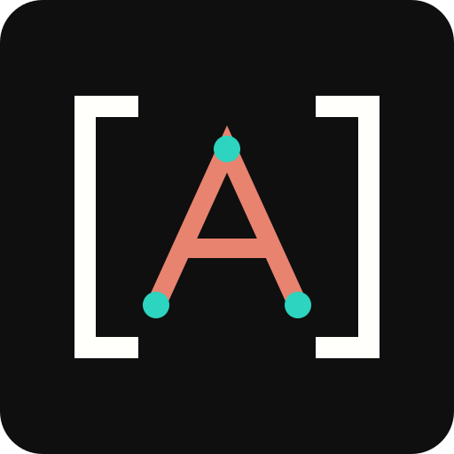

Understand the Site
Inspect the environment your code will run in, including the installed theme and plugins.

Give your coding agent the site's context and the tools to work with it. Site Agent connects content, source, PHP and WP-CLI through MCP.
You choose the access. Every tool checks WordPress permissions.
Get the stored content and its SHA-256 hash. Updates must supply the current hash, so a changed draft can be detected before saving.
Read accessPublishing is a separate, explicit input to the content-write tool.
{
"name": "site-agent-get-content",
"arguments": {
"post_id": 42
}
}Interactive tool examples. No code executes and no site is connected.
Start with the active theme, plugins, post types and raw content. Then enable the tools your task needs.
Inspect the environment your code will run in, including the installed theme and plugins.
Browse theme and plugin files. Writes check the current hash, and PHP syntax is checked first.
Run PHP in the loaded WordPress request or use foreground WP-CLI with explicit opt-in.
Read content, discover media and work on the actual source. More powerful entry points stay off until you enable them.
The interactive examples above use Site Agent's actual tool names. Content writes, source inspection, source editing, PHP and WP-CLI each have a separate opt-in.
The plugin checks the current user's permissions and enabled tools again for every call.
Enable Site Agent for basic site and content reads. Turn on each additional tool group separately. Revoke the Application Password or disable Site Agent to stop access.
Read the Access ModelPHP execution, executable file editing and WP-CLI can change the database, files or other settings. The switches control entry points; they aren't a sandbox. Use these tools with trusted clients on a backed-up development or staging site.
Use an MCP client that supports Streamable HTTP and an Authorization header.
Upload the complete ZIP in WordPress. Open Tools → Site Agent.
Enable access and the groups your task needs. Save the settings.
Create a dedicated Application Password in your WordPress profile.
Use the endpoint and authentication template shown in Site Agent.
https://your-site.com/wp-json/site-agent/v1/mcpUse the exact URL shown on your site.Get the complete plugin and a free license for automatic updates.
The code is public and GPL-licensed. License activation controls update delivery; it doesn't switch off your tools or block access to your site.
Free checkout gives you the download and license key in your account.
Browse the Source on GitHubCheck the client, privacy and developer-access boundaries before enabling tools.
Use a client with Streamable HTTP and custom Authorization headers, or a compatible Application Password bridge. Site Agent doesn't include OAuth. Clients that require an OAuth-only connection need a bridge.
Site Agent has no hosted proxy or telemetry. Your chosen client connects directly to WordPress. The client's handling of tool results depends on that client or AI provider's policy. PHP and WP-CLI can make outbound requests when instructed.
Use a backed-up development or staging site for PHP execution, file editing and WP-CLI. These tools run with server privileges and can break a site. Syntax checks and access switches don't contain arbitrary code or replace backups.
File tools are limited to theme and plugin directories. Hidden, configuration, credential and symlink paths are blocked. Source files can still contain sensitive data. Writes require the current file hash, or an explicit new-file value, and PHP syntax is checked before a write.
Complete the free checkout, then activate the license in Site Agent. FluentCart supplies update metadata and the protected download. The license affects automatic updates only. You can also install a complete release ZIP manually.
This version doesn't include OAuth, an AI chat interface, background WP-CLI jobs or a recoverable PHP sandbox. The bundled official MCP Adapter is a pinned 0.7.0 prerelease. PHP runs in the WordPress request and isn't isolated from the site.
Connect a development site, start with reads and enable more tools when the task calls for them.